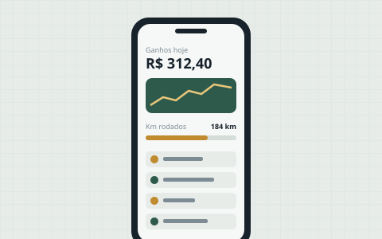
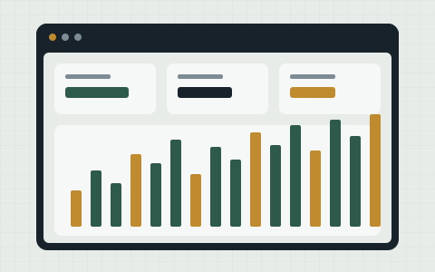
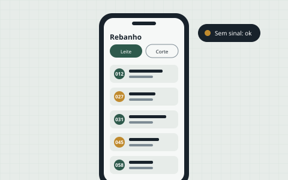
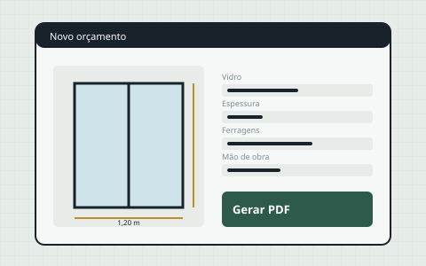
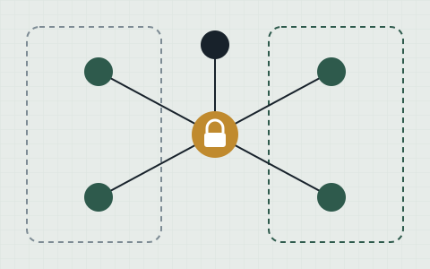

Olá, tudo bem? Eu sou
Maxmiliano Souza
Conserto motores e construo software.
Formado em Análise e Desenvolvimento de Sistemas, faço páginas de internet, aplicativos e sistemas sob medida — com a lógica da oficina: entender o problema, desmontar, resolver e entregar funcionando.
Sobre mim
Um pouco de quem está por trás do código.
Ficha técnica
- Fabricante
- Maxmiliano Souza
- Modelo
- Desenvolvedor web e de software
- Origem
- Campo Grande, MS
- Formação
- Análise e Desenvolvimento de Sistemas
- Em estudo
- Segurança da informação
- Especialidade
- Páginas, aplicativos e sistemas
Sou formado em Análise e Desenvolvimento de Sistemas e trabalho com mecânica. As duas coisas têm mais em comum do que parece: alguém chega com um problema, e o trabalho é descobrir a causa e resolver de um jeito que dure.
Hoje uso esse jeito de pensar para construir páginas e sistemas para pequenos negócios. Dedico boa parte do meu tempo a estudar segurança da informação — por isso cuido para que o que eu entrego não deixe portas abertas.
Acredito que programar bem é a base para ir longe em segurança, e meu objetivo é crescer junto com projetos maiores e com gente experiente.
Fora do trabalho, sou casado, pai de um filho e moro em Campo Grande, Mato Grosso do Sul.
Habilidades
O que eu faço e o que venho estudando.
-
Páginas de internet
Sites rápidos, que abrem bem no celular e deixam claro o que você oferece.
-
Aplicativos e sistemas
Ferramentas sob medida: controle, cadastros, cálculos e relatórios — até offline.
-
Automação e anúncios
Fluxos automáticos para tirar o trabalho repetitivo e gestão de anúncios no Meta.
-
Segurança da informação
Cursos e estudo constante sobre como proteger sistemas e dados contra ataques.
-
Análise de sistemas
Levantar o que o negócio precisa antes de escrever a primeira linha de código.
-
Suporte técnico
Entender como tudo se conecta por trás das telas e resolver o que parou.
Projetos
Coisas que estou construindo. As imagens são ilustrações.
-

Meu Rendimento Driver
Em desenvolvimentoApp de celular para motoristas acompanharem ganhos, gastos e contas, com registro de quilômetros por dia e despesas com peças do carro.
-

Painel de anúncios Meta
Em desenvolvimentoSistema para ver e acompanhar, num só lugar, todas as contas de anúncio dos clientes que eu gerencio no Meta.
-

App de gestão de rebanho
Em desenvolvimentoAplicativo instalável no iPhone para um sítio de gado de leite e de corte, que funciona offline porque no pasto não tem sinal.
-

Orçamentos para vidraçaria
Em planejamentoSistema para o computador da loja que calcula o orçamento a partir das medidas — vidro, ferragens, mão de obra e deslocamento — e gera o PDF.
-

Modelo de rede segura
EstudoProjeto de segurança da informação: como organizar uma rede para proteger os equipamentos e os dados de uma empresa.
Abrir projeto
Hobbies
O que eu gosto de fazer fora do expediente.
Contato
Tem uma ideia de site ou sistema? Me conta.